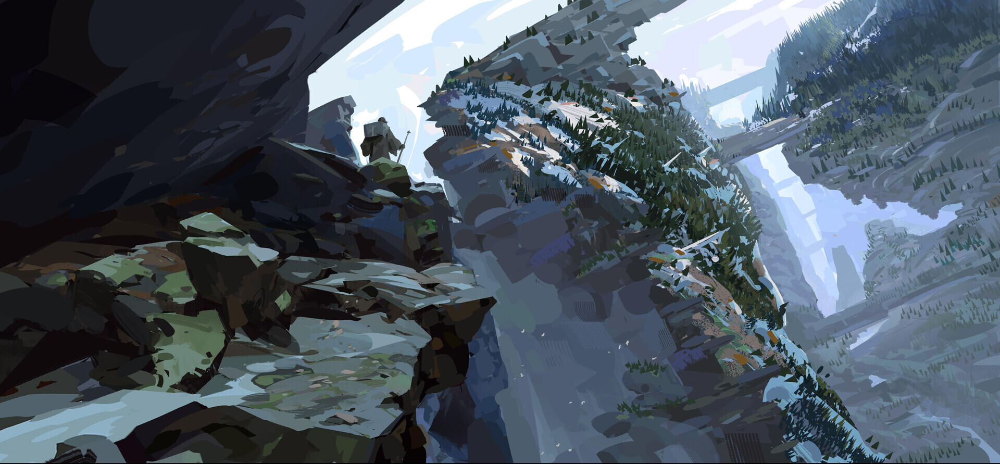
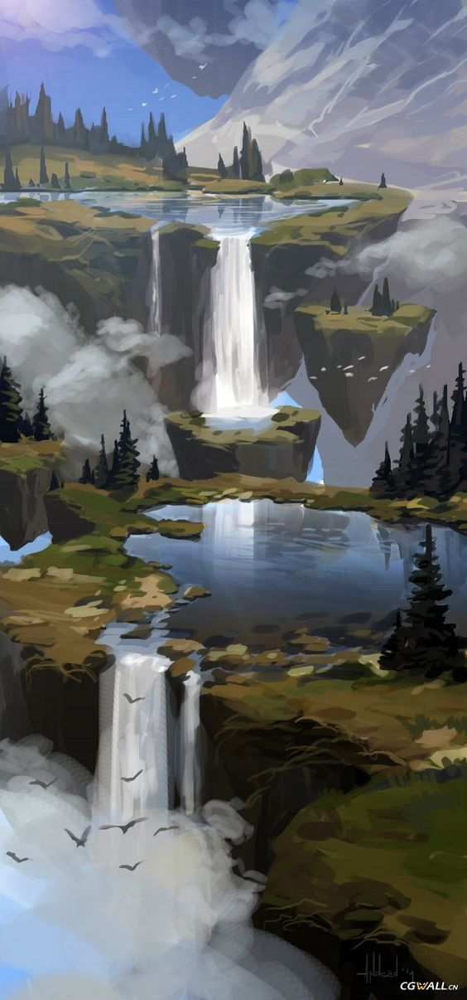
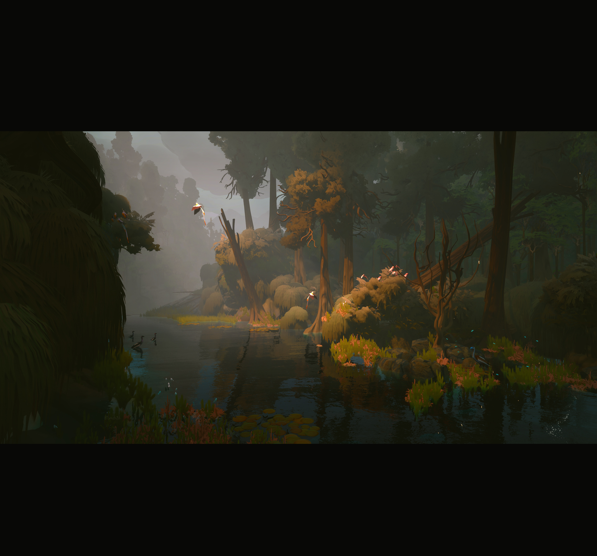
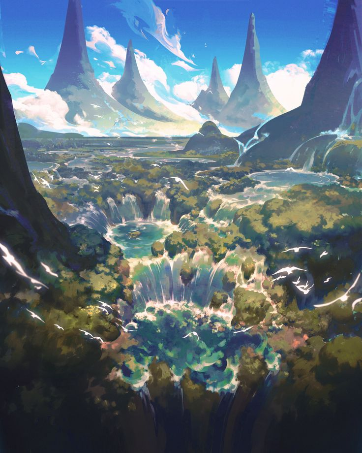
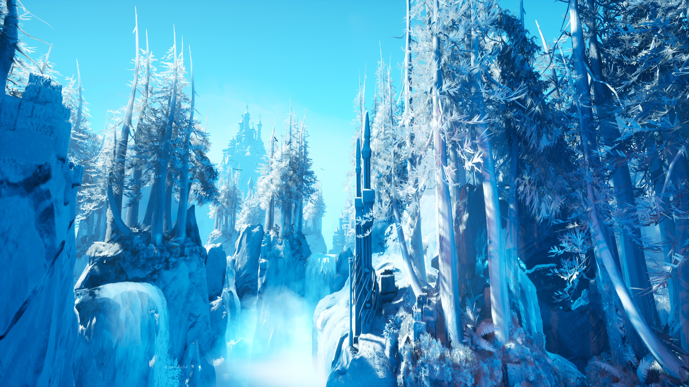

Artículos
Regiones

Xylaris es una zona muy fácil de reconocer una vez que uno se encuentra en ella, ya que está rodeada por una neblina persistente y, cuanto más se adentra uno, más persistente se vuelve una oscuridad de noche incluso en pleno día. Es una tierra crepuscular y silenciosa, donde la luz llega filtrada y los colores se apagan, y donde el tiempo parece detenerse entre la bruma.
por Kendry

Xiánor es un conjunto de cimas y farallones tan altos que las nubes quedan por debajo, y en sus laderas se aferra Yunéthys, la Ciudad Colgante, suspendida sobre el vacío entre puentes, terrazas y grandes nidos de piedra. Es el hogar de los Aeryntha, los avians, que construyeron su capital en la roca misma. El viento constante y el vuelo de las aves son el alma visible de la zona.
por Kendry

Tiltaroth es una cadena de cumbres afiladas que rasga el cielo, cubierta de nieve perpetua y rodeada de abismos que devuelven el eco. El aire es fino y cortante, y las nubes se enredan en las cimas antes de deshacerse en nieve. Quien sube hasta arriba encuentra un silencio blanco y absoluto, y la sensación de estar más cerca de los dioses que de los hombres.
por Kendry

Tengerkhat es un mar de estepa: hierba corta y ondulante hasta donde alcanza la vista, cielos inmensos y un viento constante que nunca se detiene. Las noches son frías y estrelladas, y el sonido dominante es el del viento entre la hierba. Es la tierra natal de los Cans, los pueblos lupinos y nómadas que la recorren en manadas y que llaman a esta llanura «las dueñas del cielo».
por Kendry

Talmora es una vasta extensión de hierba mecida por el viento, salpicada de colinas suaves, arboledas solitarias y arroyos lentos. En primavera las llanuras se cubren de flores, en verano el pasto se dora, y en invierno el viento las barre sin encontrar un solo obstáculo. Es una tierra abierta y generosa, de horizontes largos, donde la vista se pierde y el viajero se siente pequeño.
por Kendry

Sphagryss es una gran turbera de aguas quietas y verdosas, donde el suelo flota y engaña: bajo la hierba aparentemente firme se esconden pozas sin fondo. La niebla se levanta temprano y deja el aire tibio y cargado, y el único sonido constante es el chapoteo del lodo. Es un lugar bello y traicionero, que devora a quien pisa en falso.
por Kendry

Qasiyara es un jardín dormido: un valle de tierra negra y fértil donde la vegetación parece contenida, a la espera de una señal que aún no ha llegado. Sus árboles son antiguos y retorcidos, sus flores enormes y pálidas, y todo el lugar desprende una calma densa, como si el tiempo pasara más despacio. Quienes lo recorren sienten a menudo la impresión de estar siendo observados por algo que duerme bajo el suelo.
por Kendry

Nemorath es un bosque antiguo y cerrado al que la luz apenas se atreve a entrar: troncos oscuros, ramas entrelazadas y un suelo de sombra donde el silencio pesa. Su corazón lo ocupa el Gran Árbol «Elyr'Thal», morada y deidad de los Aelindar, que lo protegen como a su propia vida. Quien se adentra sin permiso siente la mirada del bosque, y muy pocos regresan sin haber cambiado.
por Kendry

Khakar es un gran lago interior de aguas profundas y quietas, rodeado de orillas de piedra clara y juncos que se mecen sin viento. Su superficie es tan calma que refleja el cielo como un espejo, y en las mañanas frías una niebla baja se desliza sobre el agua. Es el principal punto de agua de la árida Thessivar, y a su alrededor se cruzan las rutas de todo el interior del continente.
por Kendry

Kroställkönig es una tierra de cuarzo: mesetas y cañones donde la roca cristaliza en prismas gigantes que devuelven la luz en destellos blancos, rosados y violáceos. Bajo el sol del mediodía el paisaje parece hecho de hielo, y de noche las vetas brillan con una lumbre propia que orienta a los viajeros. Es la cuna de los Erzthón, los artífices de gemas, y en su corazón se alza la metrópolis de Ärdhorløgck.
por Kendry

Jalnarayn es un rosario de manantiales y pozas que brotan entre colinas secas, conocidos en toda Thessivar como «los ojos» que alimentan al Jardín Latente. Cada ojo es un estanque de agua cristalina rodeado de juncos y flores, un vergel pequeño en medio de una tierra árida. Quien los visita por primera vez no olvida el contraste: arena y piedra hasta el horizonte, y de pronto un espejo de agua viva.
por Kendry

Hyemyr es un bosque frío y hondo, de pinos altos, musgo espeso y luz gris que casi nunca llega al suelo. En invierno, la nieve se acumula en las ramas hasta que el bosque entero parece de cristal; en verano, la humedad lo cubre todo de un verde oscuro y silencioso. Es un lugar de inviernos largos y de una calma antigua que invita a bajar la voz.
por Kendry